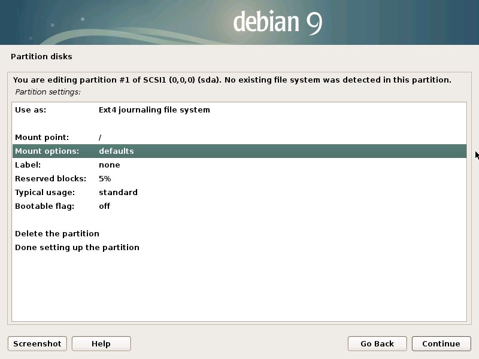
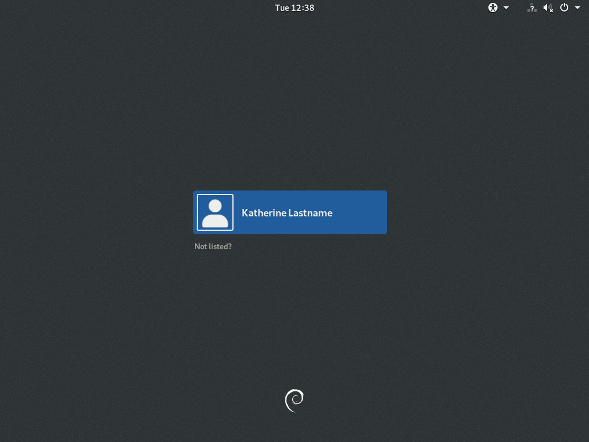
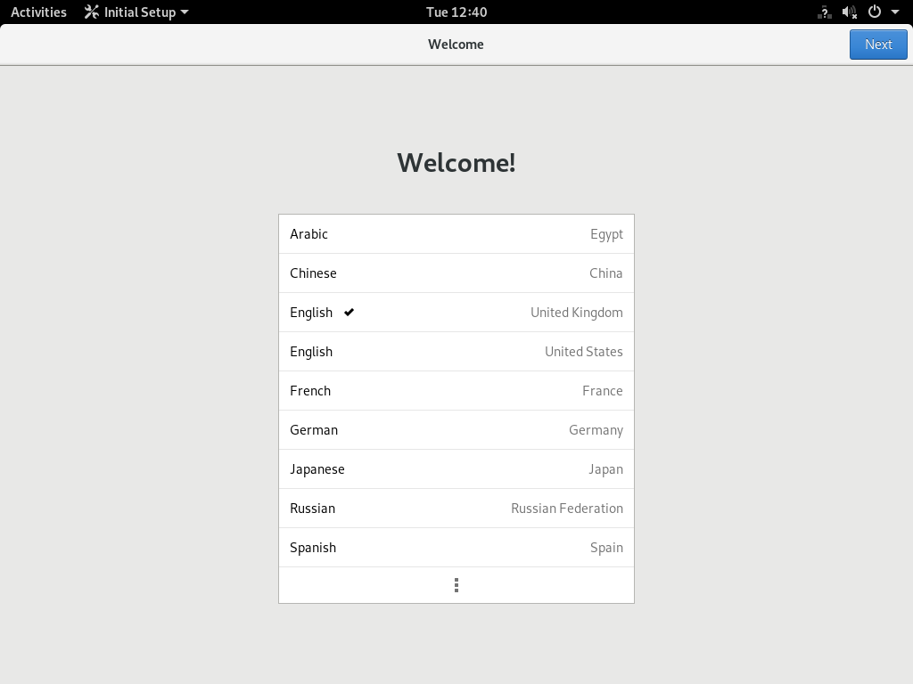

How to Debian
This guide will help you installing Debian, preferably alongside Windows. I added many pictures of basically every step of the installation process so it'll surely be easy going. Special thought has gone into all kinds of things, like internet connectivity, NVIDIA drivers, Broadcom Wi-Fi drivers, power management, gaming! It'll be easy!
Table of Contents
- How to Debian
- Table of Contents
- Windows
- Installation
- Tips & Tricks & Troubleshoots
- Changelog
- Contact
Windows
If you want to only have Debian installed, go to step 4, if you want to have Debian and Windows installed on separate drives, go to step 4. If you want to have Debian and Windows installed on the same disk, go to step 2.
Right-click the start menu and select "Disk Management" or press the windows key together with the R key and enter
diskmgmt.msc.Identify your Windows installation on the bottom half and right-click it, then select "Shrink Volume..." and shrink the Windows installation by at least 20 000 MB, more is better.
Type
msinfo32in your start menu and under "System Summary -> BIOS Mode" check if it says UEFI or Legacy. Remember this or write it down.Insert a spare USB flash drive into your computer and open Rufus.
Inside Rufus select the following:
- "Device" and your spare USB flash drive
- "SELECT" and the
debian-testing-amd64-netinst.isofile - "Partition scheme" and GPT
- "START" and DD.
If you have Windows 8 or Windows 10, right-click the start menu and select "Power options", then select "Choose what the power buttons do" on the left, and make sure the option for "Fast startup" is unchecked/disabled.
Installation
Prepare yourself for lots of images! I've made a screenshot of every step of the installation, including exactly what to click on, so enjoy! Underneath every image I put an explanation, in case it can use one.
First you'll have to boot into the installation. Inside Windows 8 & 10, you can hold shift, and right-click the start menu, then click reboot. You'll be shown a screen. Choose to use a device, and then (UEFI)USBname, or if you're not using UEFI, just USBname. If you don't see that, then try holding F11 or F12 or F8 during a reboot and see if you can get a prompt from your BIOS.
Note that if you don't use cabled internet, you can plug in an Android phone to your computer and enable "USB tethering" to get temporary internet access anyway. It will use your phone's Wi-Fi, so you don't need a SIM in it.
For the images in the guide we'll go ahead and use 'Graphical install' but there's also the Advanced option to do an expert install. That involves mostly clicking, but gives you some extra choices during installation which will possibly get you confused. It's more for people who wouldn't dream of following a guide!
You can choose any language you want from the list. The installation process will look differently, obviously, but you'll likely still be able to follow the guide along.
This part makes it slightly nicer when you've finished installing. You can still set the locale in the Settings app afterwards of course.

This is the name that will be shown in your router and at some places inside of Debian. It's like "Katherine's iPad". Now is your time to set it to "Deathstar" or "Typewriter".
If this is not filled in already, then you can just leave this blank. If it is filled in already, then you can leave it as the default.
I would recommend you leave this blank, which results in a more Windows/Mac like administrator account experience. Where you enter your password or click 'Yes' sometimes, instead of logging into 'su' to do so. If you don't know the difference between 'sudo su' and 'su', it's best to leave this blank.
We'll choose 'Manual' here. If you intend to do without Windows and/or use an entire SSD for Debian, then you can go ahead and choose the guided, or the guided encrypted one instead of Manual.
I used a virtual machine to take the screenshots, so the only disk I have available here is an empty one. You should see a label called FREE SPACE instead, and go directly to two images down.
This is where you'll be if you're using the same SSD as for Windows.
It'll automatically show the maximum amount of free space available on the disk.
You'll only see this when you're not using UEFI.
Discard is useful for SSDs, but not needed for HDDs.
Welcome back, guided and guided encrypted users!
deb.debian.org will work for everyone, no matter where you are.
If you're scared of any kind of telemetry and yet still somehow have an internet subscription, then you should choose 'No'.
We don't want any of this.
This only shows for non-UEFI computers. For UEFI computers, it'll show something about EFI removable path, for which you want to probably go with the default of 'No'.
This should only be shown to non-UEFI computers.
Yay we're booting into Debian! You'll probably see an entry for Windows too, as well as 'System setup' or similar if you're on UEFI. That last one gets you into your UEFI settings.

Log in with your username and password, then type sudo su and your password again to enter root.
Enter apt install curl -y. If it doesn't connect to the internet, type dhclient and wait until that finishes, then try the previous command again.
When it says done, enter curl -o ~/helpinghand https://howtodebian.github.io/helpinghand && chmod +x ~/helpinghand && clear && ~/helpinghand and it'll finish installing.
This can take a while. And it might look a bit different from the screenshot, as I update the helping hand.
It's looking much prettier already!
The time at the top of the screen is all wrong for me, and it might be for you too. We'll resolve that later. If you don't want to play Steam games, then GNOME is the best option, GNOME on Xorg is for games. You won't see Xorg if you have an NVIDIA graphics card.
Click the dots at the bottom to search for something else.
I think Debian loves privacy so much that even though this is an option, I don't think it does anything; like automatically setting the time correctly.
Press the windows key or command key and type 'Tweaks'. Then click the big icon. This is a graphical application to do some quick tweaks. See, you can also search for a variety of things like characters. Try typing 'Popper', then click the result and you can paste a party popper everywhere! 🎉 It also works with calculations (try '2+2'), applications in the Software app (try 'mGBA'), and files on your computer!
Animations: OFF. They can be too taxing on Linux
Totally optional: you can set the Hinting to Full. You'll likely notice no difference, but it can make text a bit more readable. Anti-aliasing Standard works best; while subpixel does work, the lcdfilter is not good enough and you'll grow really annoyed with the fonts.
Flat disables mouse acceleration, and I don't know about the others because I'm basically a professional 1337 FPS shooter gamer in my spare time (when I'm not writing guides on Debian, of course) so I wouldn't dream of using mouse acceleration.

Top right is quick settings. Wrench and screwdriver goes to the settings app. Play around, have fun, set the time correctly. Consult the Help app in case you're confused. Join your Wi-Fi network, set DNS servers, consult ntp servers, proxy the VPN...
...or Power Off the computer.
Tips & Tricks & Troubleshoots
In Firefox, you should go to about:config, then look for layers.acceleration.force-enabled and toggle that to true. Search for toolkit.cosmeticAnimations.enabled and toggle that to false. To put the tabs in the title bar, go to the top-right hamburger menu, click customise, and in the bottom left you can uncheck the title bar. Disabling smooth scrolling in the preferences will likely also be pleasant for you.
In the Software app you can install apps. The progress bar doesn't work great; it'll install it after a while though.
Updates should be asked to be installed when you power off the computer. They should. However I'm still testing that. If you haven't seen one such prompt in a month, then you can manually check for updates in the Software app.
I'll put more neat things in here if I think of them.
Changelog
I'll put updates here.
Contact
Everyone who I sent this link to already knows me. I'll have to find a good way to let strangers contact me.